AI viết đúng giọng thương hiệu cho nhiều kênh, viết bài dài, dựng landing page, làm ảnh và motion video đúng màu, đúng mẫu.
Sau bài này, bạn có file giọng một trang, lưu thành Skill, để mọi bài Claude viết ra đúng giọng công ty.
Nó thiếu ba thứ. Thiếu ba thứ này, bài nào cũng na ná nhau:
Spa nhỏ ở Cần Thơ hay chuỗi lớn ở Sài Gòn.
Nữ văn phòng 25–40 tuổi, ngồi máy lạnh cả ngày.
"Tuyệt vời", "đẳng cấp", dấu chấm than.
Ba bài mẫu thật quan trọng nhất: Claude bắt chước cách viết tốt hơn khi đọc mô tả.
Ví dụ dòng của spa ở phần 4: "Không đưa khuyến mãi vào câu trả lời đánh giá".
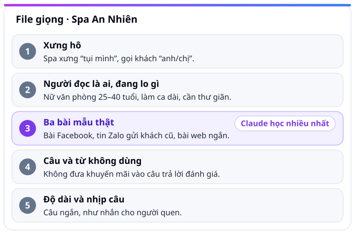
Bài mẫu thật dạy AI nhiều hơn mọi lời mô tả.
Ảnh chụp trang trợ giúp Anthropic "Understanding Claude's personalization features", ngày 21/11/2026. Khung số do The AI Growth vẽ thêm.
Ảnh chụp trang trợ giúp Anthropic "Understanding Claude's personalization features", mục "Choosing the right feature", ngày 21/11/2026. Khung số do The AI Growth vẽ thêm. Cùng trang này ghi Project có ở mọi gói, gói Free tối đa 5 Project.
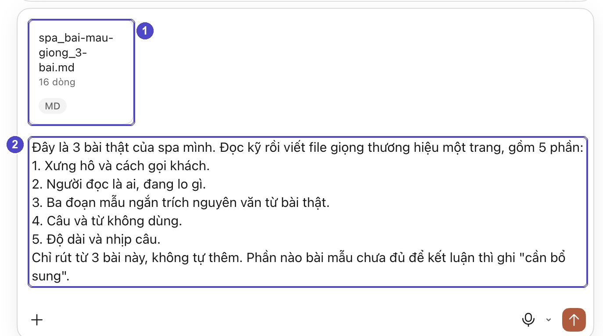
Ảnh chụp app Claude ngày 21/11/2026: (1) file 3 bài mẫu đã đính kèm, (2) prompt, chưa bấm gửi.
Đọc từng phần. Dòng nào sai, bạn nhắn một câu để sửa đúng dòng đó.
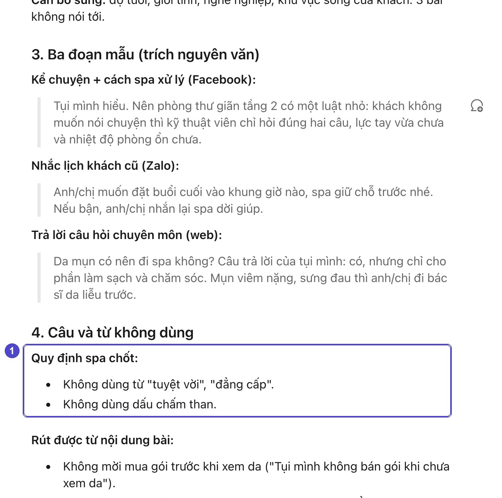
Ảnh chụp app Claude ngày 21/11/2026: file giọng ở khung bên cạnh, (1) phần 4 đã có 2 quy định mới.
Đọc lại dòng mô tả (description) trước khi bấm Lưu, như bài 6.3.
Ảnh chụp app Claude ngày 21/11/2026: thẻ "Lưu plugin" với (1) dòng mô tả và (2) nút Lưu.
Đặt bài mới cạnh bài ở đầu bài học để so. Claude không đọc Skill thì thêm câu đầu: "Dùng Skill giong-spa."
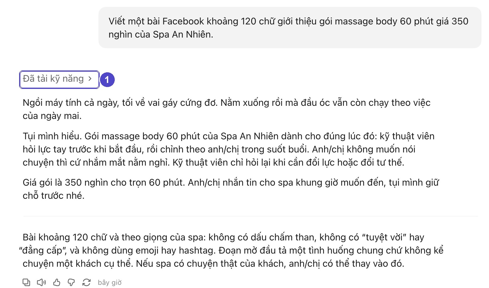
Ảnh chụp app Claude ngày 21/11/2026: (1) dòng "Đã tải kỹ năng" hiện trước bài viết.
Sau bài này, bạn giao một lần và nhận 5 bản: Facebook, LinkedIn, email, Zalo, kịch bản video ngắn, đúng giọng, trong một file.
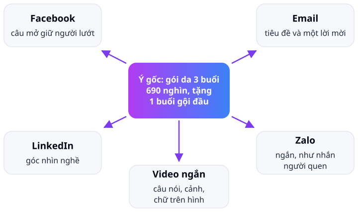
| Kênh | Người đọc đang làm gì | Bản cần như thế nào |
|---|---|---|
| Lướt nhanh trên điện thoại | Câu mở giữ người đang lướt | |
| Đọc chuyện nghề | Góc nhìn của người trong nghề | |
| Lọc hộp thư | Tiêu đề rõ, một lời mời | |
| Zalo | Đọc tin của người quen | Ngắn, như nhắn cho người quen |
| Video ngắn | Xem không bật tiếng | Câu nói, cảnh, chữ trên màn hình |
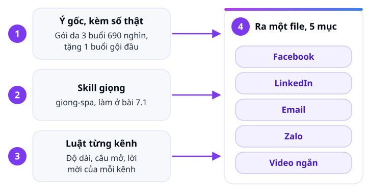
Giá, ngày, ưu đãi.
giong-spa của bài 7.1.
Độ dài, câu mở, lời mời.
Claude Docs mở file ở khung bên cạnh, bạn sửa thẳng trong file.
| Chỗ cần đọc | Ví dụ ở spa | Cách sửa bằng một câu nhắn |
|---|---|---|
| Câu lặp nguyên văn giữa các kênh | Facebook và LinkedIn mở cùng một câu | "Viết lại câu mở bản LinkedIn, giữ 4 bản còn lại." |
| Ưu đãi, con số Claude tự thêm | Bản email ghi "giảm 10% cho khách mới" | "Bỏ mọi ưu đãi không có trong ý gốc." |
| Bản Zalo, email dài quá | Zalo 7 câu | "Rút bản Zalo còn 3 câu." |
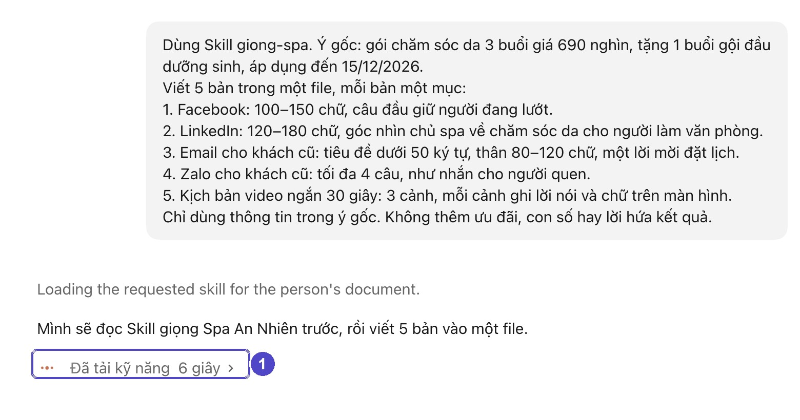
Ảnh chụp app Claude ngày 21/11/2026: (1) Claude tải Skill giọng trước khi viết.
Đủ 5 mục. Mỗi mục đúng độ dài. Không có con số lạ ngoài ý gốc.
Chưa đăng, chưa gửi bản nào.
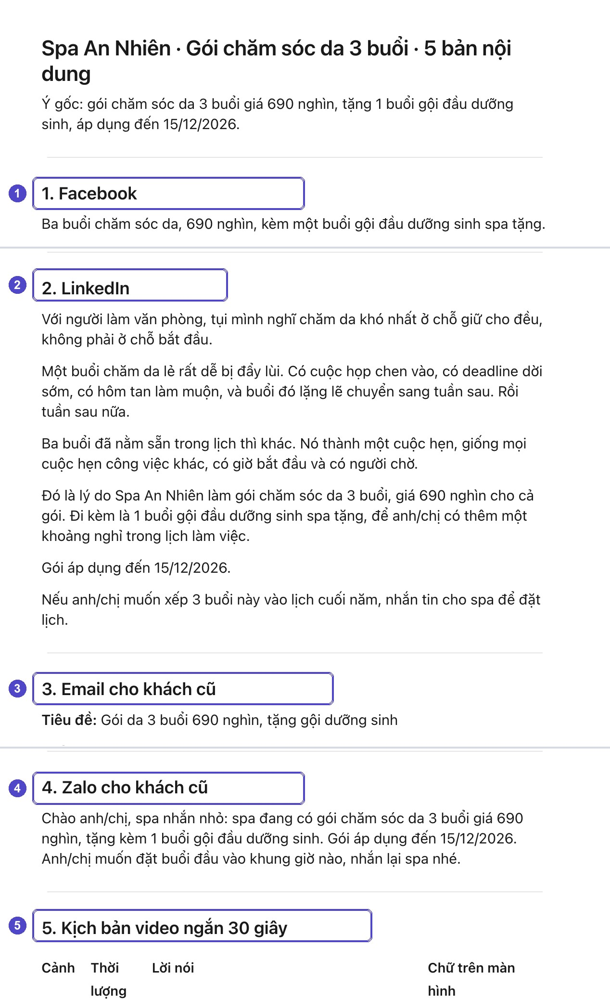
Ảnh chụp app Claude ngày 21/11/2026: file ở khung bên cạnh, ghép 3 lần cuộn. (1)–(5) là 5 mục.
Chỉ mục Zalo đổi. Bốn mục kia giữ nguyên.
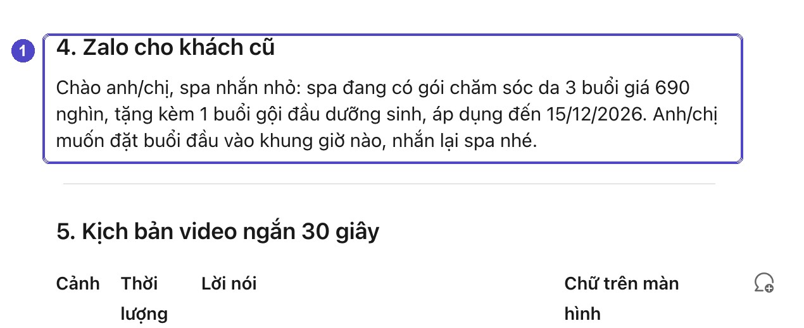
Ảnh chụp app Claude ngày 21/11/2026: (1) mục Zalo đã rút còn 2 câu, mục 5 giữ nguyên.
Sau bài này, bạn có một JSON prompt mẫu theo màu và phong cách của công ty, đổi từng ô để ra ảnh mới mà không lệch mẫu.
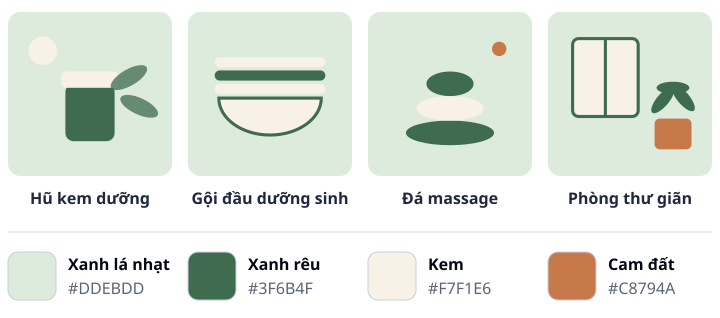
Prompt câu thường chỉ nói vài thứ. Mỗi lần đoán khác nhau, nên màu, ánh sáng, góc máy đổi theo.
Giống đặt bánh kem qua điện thoại, so với gửi mẫu có ghi số đo.
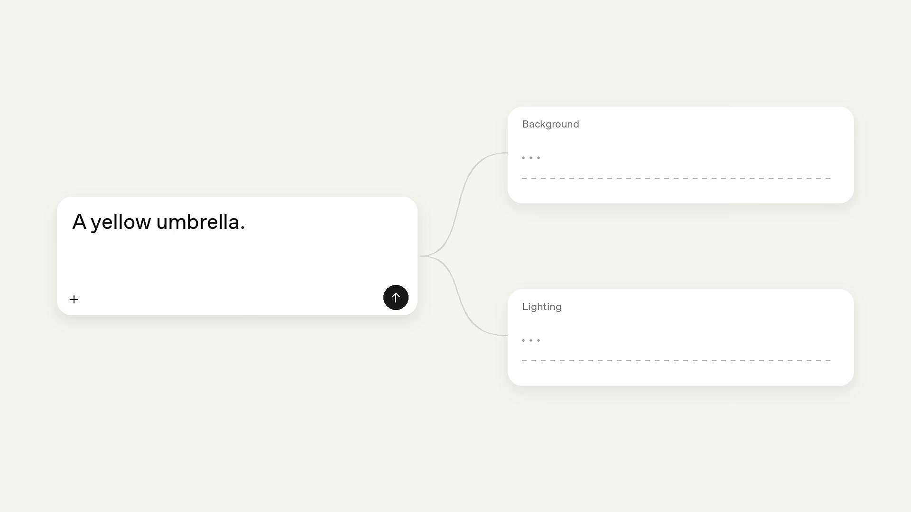
Khung hình từ video của OpenAI "ChatGPT Images: Three Ways to Get Started", ngày 11/11/2026: prompt ngắn để trống nền và ánh sáng.
Chủ thể, bố cục, góc máy, ánh sáng, màu (mã màu), phong cách, thứ không được có, tỉ lệ khung.
Không cần biết lập trình: Claude viết JSON từ file thương hiệu.
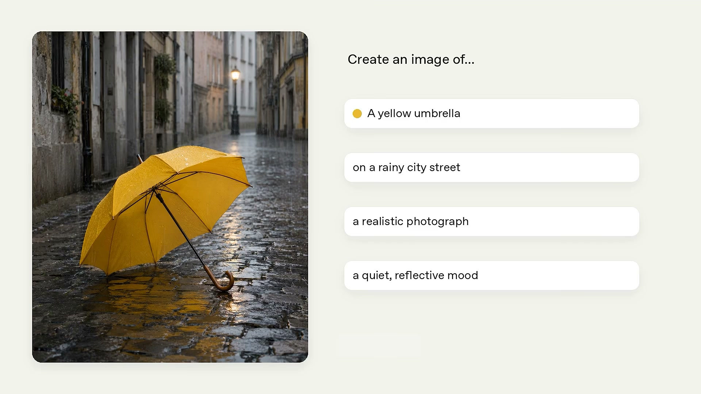
Khung hình từ video của OpenAI, ngày 11/11/2026: prompt chia thành từng phần rõ ràng.
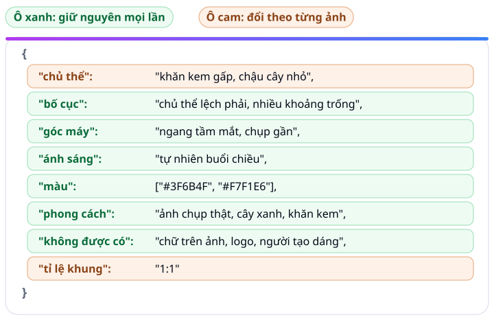
Dán JSON vào ô nhập ở chế độ Images.
Nhờ Claude viết cùng nội dung thành câu thường chia mục rồi dán.
Gemini Plus chưa làm được video (mình thử, 21/11/2026). Gemini Neon làm được, nhưng theo mình vẫn kém Opus. Video dựng bằng Claude ở bài 7.6.
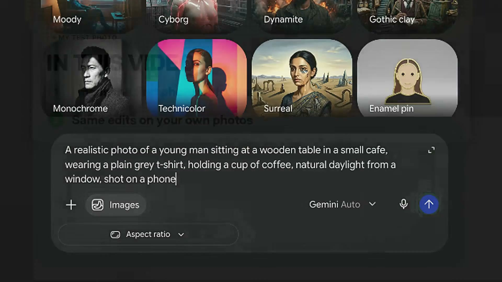
Ô nhập ở chế độ Images của Gemini (khung hình video hướng dẫn ngày 20/11/2026). Prompt trong khung là câu thường.
AI hay vẽ sai chi tiết logo. Logo thật đặt sau bằng công cụ thiết kế.
Nhưng bạn soát từng chữ, từng dấu trước khi dùng.
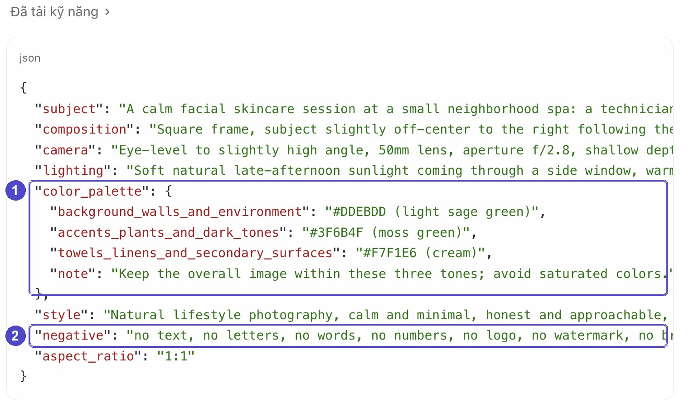
Ảnh chụp app Claude ngày 21/11/2026: khối JSON 8 ô, (1) color_palette có mã màu, (2) negative chặn chữ và logo.
Mở Gemini, chọn chế độ Images, dán JSON, gửi.
Muốn sửa ảnh, nói rõ phần giữ nguyên: "Keep him exactly the same" trong ví dụ bên cạnh.
Dùng ChatGPT thì dán bản câu thường chia mục.
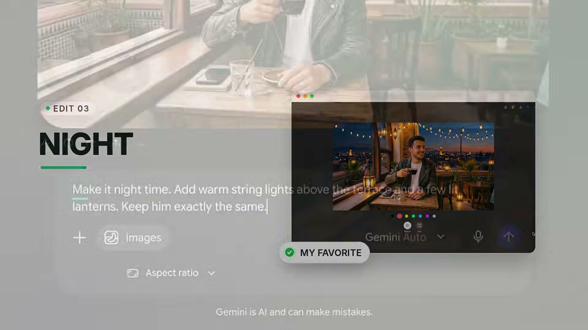
Gemini sửa ảnh và giữ nguyên nhân vật (khung hình video hướng dẫn ngày 20/11/2026).
Claude chỉ đổi một ô. Ảnh mới vẫn cùng màu, cùng phong cách.
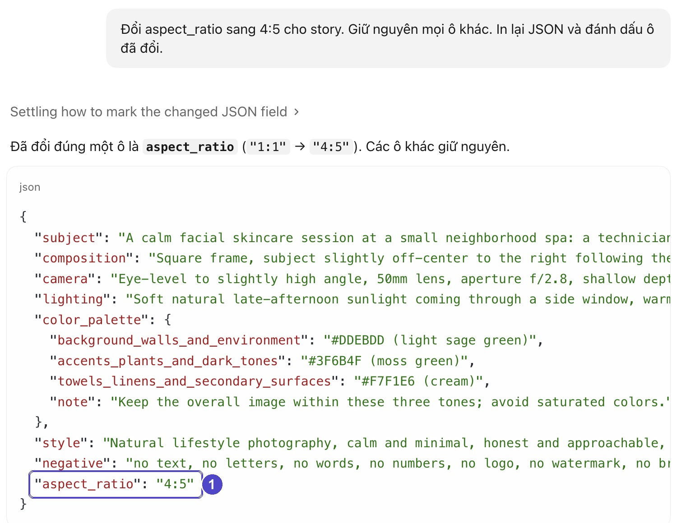
Ảnh chụp app Claude ngày 21/11/2026: Claude chỉ đổi (1) aspect_ratio sang 4:5, các ô khác giữ nguyên.
Sau bài này, bạn có bản landing page một trang theo hành trình khách, có form đăng ký, xem được trên điện thoại, xuất ra HTML.
Người bán hàng giỏi trả lời theo đúng thứ tự khách hỏi. Trang cũng vậy.
Viết chữ trước, thiết kế sau.
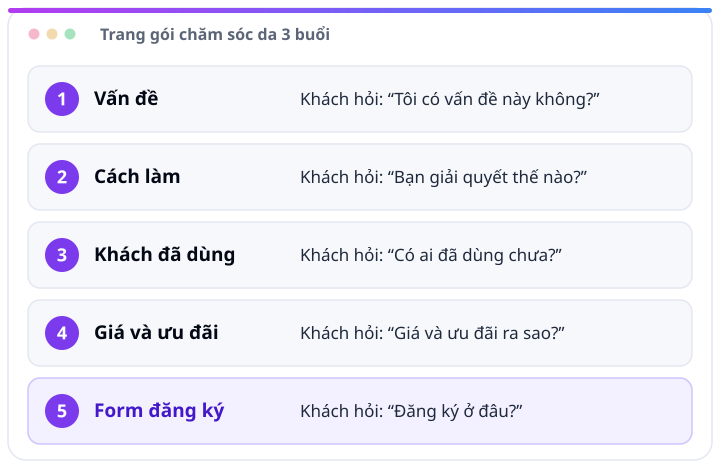
Form chỉ 2 ô bắt buộc, 1 ô tuỳ chọn.
Ảnh chụp trang trợ giúp Anthropic "Get started with Claude Design", ngày 21/11/2026. Khung số do The AI Growth vẽ thêm.
Ảnh chụp trang trợ giúp Anthropic "Get started with Claude Design", mục "Tips for best results", ngày 21/11/2026. Khung số do The AI Growth vẽ thêm.
Link công khai cũng cần gói Pro trở lên (trang chia sẻ artifact của Anthropic, kiểm 20/11/2026).
Nối form với Google Forms, rồi đưa trang lên tên miền của bạn. Không cần viết code.
Ảnh chụp trang trợ giúp Anthropic "Get started with Claude Design", mục "Export and share", ngày 21/11/2026. Khung số do The AI Growth vẽ thêm.
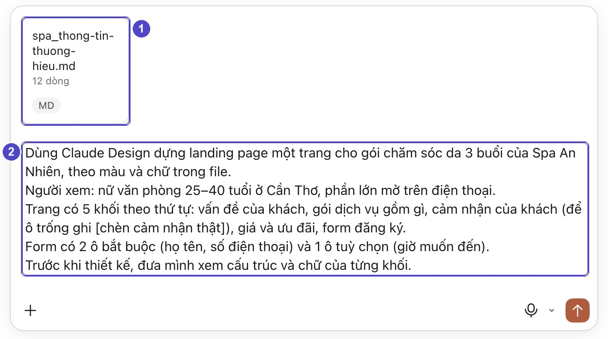
Ảnh chụp app Claude ngày 21/11/2026: (1) file thương hiệu đính kèm, (2) brief, chưa bấm gửi.
Claude đưa cấu trúc 5 khối kèm chữ, hoặc hỏi lại. Bạn đọc từng khối, nhất là câu Claude tự thêm.
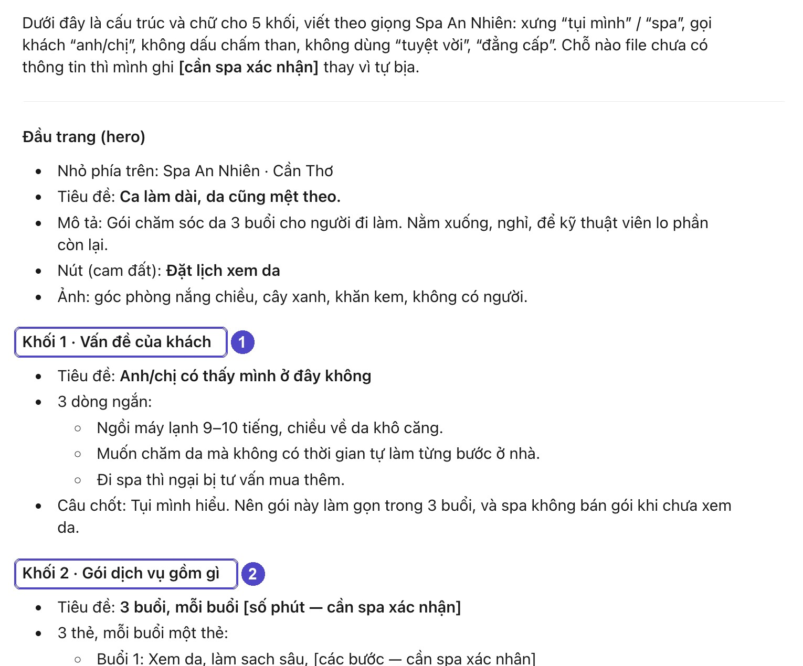
Ảnh chụp app Claude ngày 21/11/2026: Claude đưa chữ từng khối trước khi thiết kế, (1) khối 1, (2) khối 2; cuộn tiếp có khối 3 đến 5.
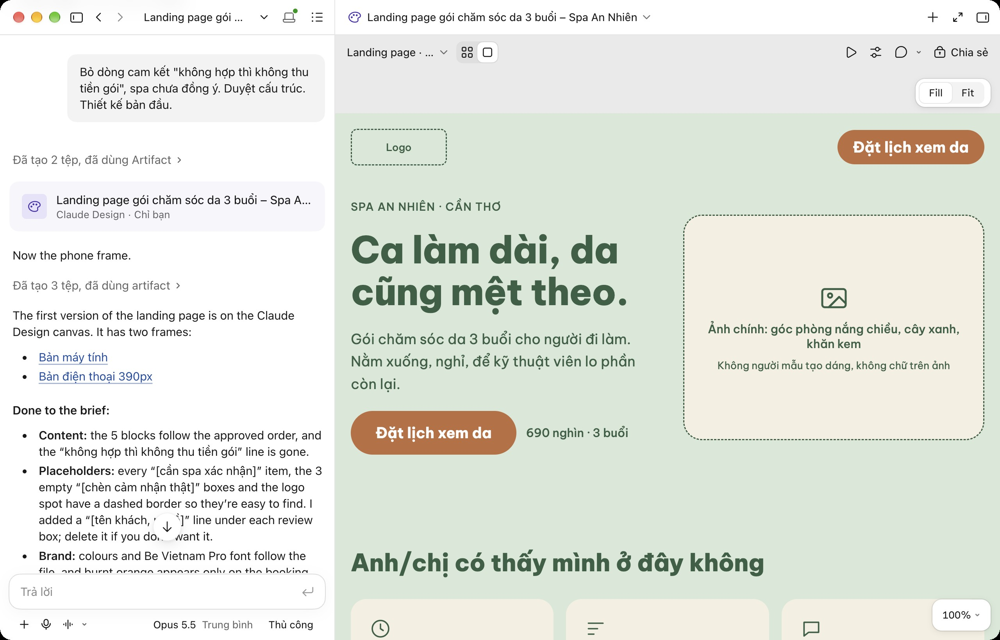
Ảnh chụp app Claude ngày 21/11/2026: bản đầu mở ở khung Claude Design cạnh cuộc trò chuyện.
Claude Design dựng thiết kế cạnh cuộc trò chuyện. Bạn sửa tiếp ngay trong chat.
Bạn cũng có thể chọn Output → Design ở ô nhập.
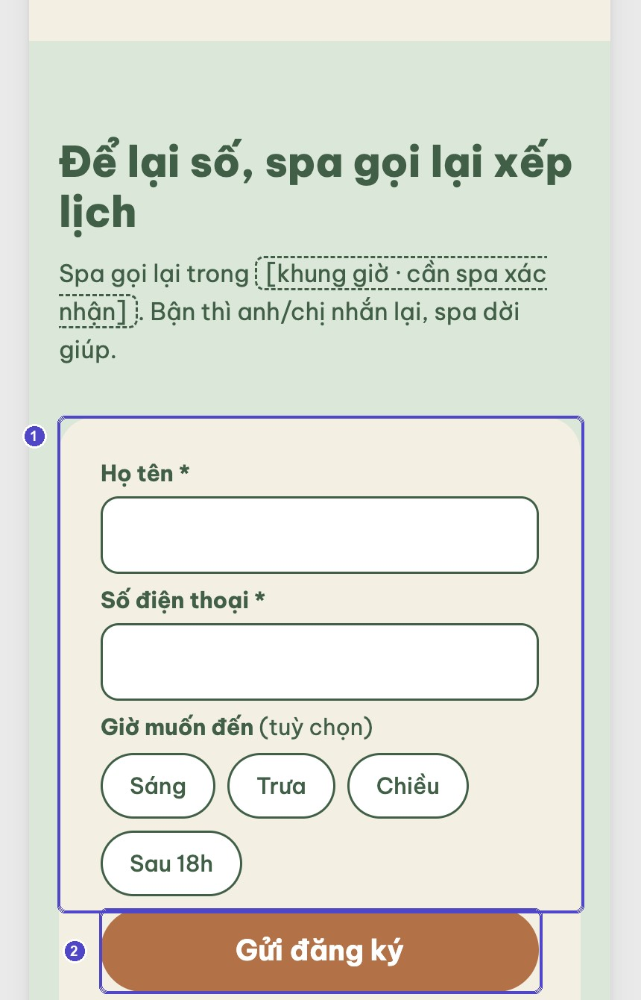
Ảnh chụp app Claude ngày 21/11/2026: bản điện thoại 390 px, (1) form 3 ô, (2) nút màu #C8794A.
Chia sẻ → Xuất → HTML (Trang web độc lập). Nhúng Google Forms vào khối form.
Chưa đưa lên mạng, chưa gửi sang Netlify hay Wix.
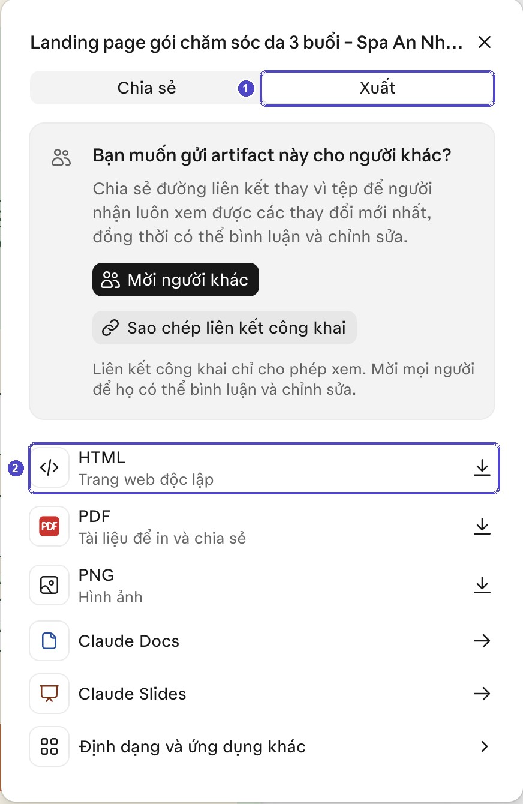
Ảnh chụp app Claude ngày 21/11/2026: (1) tab Xuất, (2) HTML "Trang web độc lập".
Sau bài này, bạn viết một bài 2.000 chữ đủ mục, đúng độ dài từng mục, đúng luật viết, bằng cách giao từng phần và kiểm từng phần.
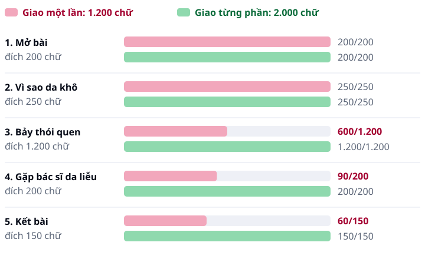
Theo mình, mỗi lượt trả lời, model có xu hướng gói gọn.
Giống giao 15 việc trong một cuộc gọi: người nghe nhớ việc đầu và việc cuối.
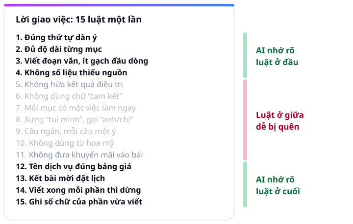
Ảnh chụp trang Claude Platform Docs "Models overview", ngày 20/11/2026. Khung số do The AI Growth vẽ thêm.
Đoạn văn hay gạch đầu dòng, cách xưng.
Lấy từ bài 7.1.
Có số chữ của từng mục.
Để Claude không tự điền số.
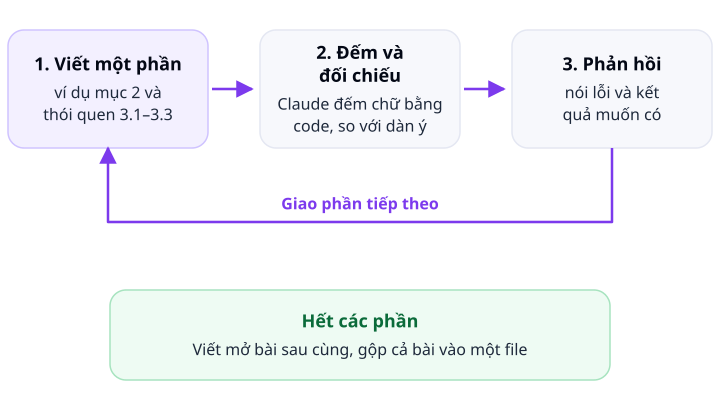
3–4 phần, mỗi lần giao một phần.
So với dàn ý sau mỗi phần.
"Viết đoạn văn, bỏ gạch đầu dòng ở mục 3.2."
Khi thân bài đã xong.
Dàn ý bài dài · luật viết của spa · 3 bài mẫu giọng.
Thanh bên → Dự án → tạo Project. Kéo 3 file vào kho kiến thức.
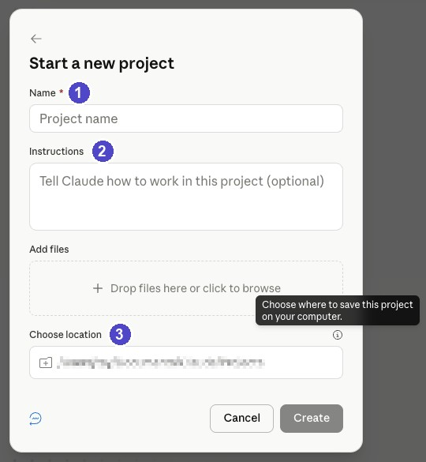
Ảnh tạm: hộp tạo Project bản tiếng Anh (chụp ở Module 06). Sẽ thay bằng ảnh Project có 3 file trong kho.
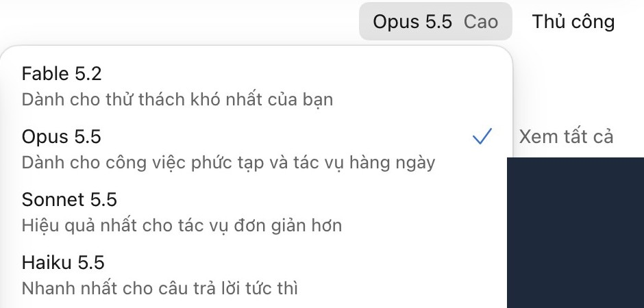
Ảnh tạm: ô chọn model, Opus 5.5 (chụp ở Module 02). Sẽ thay bằng ảnh prompt phần 1 trong Project.
AI ước số chữ hay sai. Code đếm thì đúng.
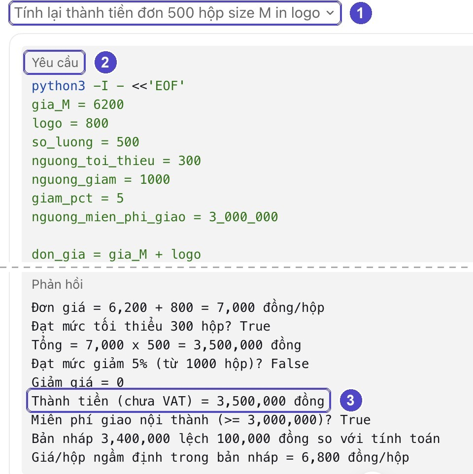
Ảnh tạm: Claude chạy code để tính (chụp ở Module 03). Sẽ thay bằng ảnh bảng đếm chữ 3 cột.
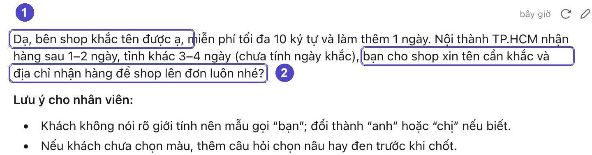
Ảnh tạm: Claude sửa theo phản hồi (chụp ở Module 03). Sẽ thay bằng ảnh phản hồi mục 3.2.
Trước bước này, giao mục 4 và mục 5: "Viết mục 4 và mục 5 theo dàn ý, rồi dừng."
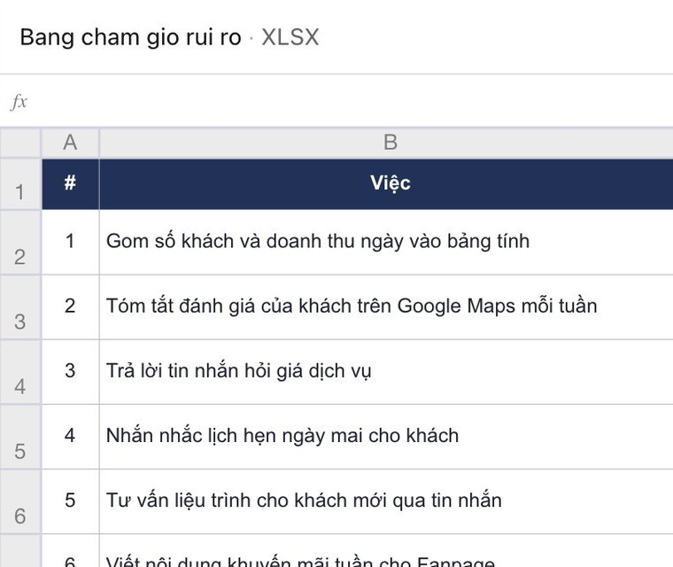
Ảnh tạm: file Claude tạo ở khung bên cạnh (chụp ở Module 01). Sẽ thay bằng ảnh file bài hoàn chỉnh.
Sau bài này, bạn biết Claude Motion làm được gì, cần gói nào, và đi từ kịch bản 30 giây tới file MP4.
Ảnh chụp trang trợ giúp Anthropic "Get started with Claude Motion", ngày 21/11/2026. Khung số do The AI Growth vẽ thêm.
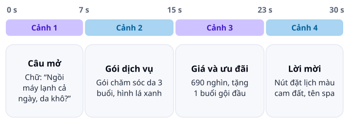
| Cách làm | Gói cần | Kết quả |
|---|---|---|
| Claude Motion | Team, Enterprise | Xuất MP4 trực tiếp |
| Hoạt hình HTML trong chat, rồi quay màn hình | Pro trở lên | Quay màn hình để có video |
| Claude Code (Module 02) | Pro trở lên | Thêm bước, cần quen làm việc với thư mục |
Ảnh chụp trang trợ giúp Anthropic "Get started with Claude Motion", ngày 21/11/2026: (1) chọn Output rồi Motion ở ô nhập, (2) hoặc vào tab Artifacts, chọn mẫu Motion.
Ảnh chụp trang trợ giúp Anthropic, mục "Edit your animation", ngày 21/11/2026: (1) nhờ Claude sửa trong chat, (2) sửa thẳng trong trình sửa.
Ảnh chụp trang trợ giúp Anthropic, mục "Export and share", ngày 21/11/2026.
Video mới làm chỉ mình bạn thấy. Muốn chia sẻ thì mở video và bấm Share.
Tải MP4 về, đọc lại giá và chữ, rồi tự đăng.
Nhân viên AI báo cáo và phân tích.